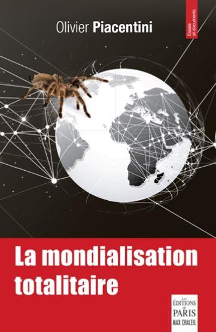

Les populismes parviendront-ils à vaincre le mondialisme ?
par Olivier PIACENTINI
L’histoire mondiale a entamé, on peut désormais l’affirmer, un véritable tournant au cours de ces deux dernières années, en particulier en cette année 2018. Un peu partout dans le monde, des partis ouvertement antisystèmes accèdent au pouvoir, et remettent en cause avec énergie, et parfois éclat, l’idéologie dominante qui se prétendait, depuis vingt-cinq ans, sans rivale, et devait nous conduire à une fin de l’histoire heureuse et fraternelle. Mais ce mouvement, pour le moment, évite la France, la contourne, la marginalise presque. Alors, je vois autour de moi beaucoup de Français, des patriotes en particulier, qui depuis 2017, se morfondent, sombrent dans le pessimisme et la résignation. La superclasse mondiale serait trop puissante, elle finirait toujours par s’imposer.
Et pourtant, il suffit de traverser les Alpes pour mesurer, en un instant, l’espoir qui s’est levé, et qui semble d’ailleurs trouver ses premiers prolongements concrets.
Il suffit aussi d’entendre cette Amérique profonde, ou la « Working class », pour apprécier le regain d’optimisme au sein du peuple, y compris d’ailleurs de la minorité afro-américaine qui voit sa situation s’améliorer.
Notre pays serait donc le seul, parmi les grands, à rester en rade, pendant que les autres voguent avec le vent de l’histoire dans les voiles. Il serait surtout le seul à se vautrer encore plus dans la globalisation, l’idéologie mondialiste, sous la présidence d’Emmanuel Macron, alors que même l’Allemagne commence à montrer de la retenue. Voilà pourquoi, dans notre hexagone, nos horizons semblent bouchés, et l’on continue à se sentir sous le glacis de l’Empire, avec notre Président, alors que les forteresses tombent les unes après les autres dans le reste du monde. Alors, malgré tout, une question se pose subliminale, dans les esprits : est-ce que les populismes auront les moyens de renverser le mondialisme ? En auront-ils vraiment les moyens, ou s’agit-il de simples rodomontades, d’un ultime spasme nationaliste avant la mort ? Les populismes sont-ils des velléitaires appelés à se fracasser contre le mur de la réalité ?
Avant d’aborder le fonds de la question, il me semble indispensable de définir précisément les mots qu’on emploie, que l’on sache de quoi on parle réellement. Le mondialisme, c’est l’idéologie d’une superclasse mondiale dominante de l’oligarchie, qui profite de la mondialisation pour étendre son emprise sur la planète entière. La mondialisation c’est le mouvement technologique qui concourt au développement des échanges (transports, télécommunications, médias, internet, satellites) qui se poursuit et s’amplifie depuis la deuxième guerre mondiale, mais qui n’a vraiment recouvert toute son acception qu’au lendemain de la chute du mur de Berlin : auparavant, les techniques avaient beau s’améliorer, le Concorde franchir l’Atlantique en trois heures, la télévision en direct et le téléphone se généraliser, le monde était coupé en deux blocs antagonistes, séparés par un rideau de fer parfaitement étanche. La mondialisation ne pouvait réellement se déployer dans sa pleine mesure dans ce contexte de rivalité politique et économique. Au début des années quatre-vingt-dix, le marxisme s’est écroulé, de l’intérieur, comme un château de cartes, et la mondialisation s’est désormais imposée à tous sous la forme d’un libre-échangisme intégral, un monde ouvert à la circulation des marchandises, des idées, des hommes également.
L’OMC créée en 1993, très vite au lendemain de l’implosion de l’Union Soviétique, devint le garant d’un libre-échangisme porté sur un piédestal, presque aussi haut que la mission de paix confiée à l’ONU. Le socle du mondialisme, sa force motrice, ce n’est pas seulement la technologie, c’est surtout le libre-échangisme. A travers lui, va s’imposer une élite marchande mondiale, qui existait déjà avant 1990, mais qui va désormais déployer ses activités au mieux de ses intérêts, car elle dispose enfin d’un terrain de jeux à la mesure de ses capacités : les multinationales. Les multinationales vont ainsi, en deux décennies, transformer le monde en une vaste colonie, entièrement vouée à leurs intérêts. Elles déploient leurs sites de production là où les couts, en particulier les couts salariaux, sont les plus bas, là où les législations sociales, fiscales, sanitaires, environnementales sont les plus souples, pour revendre leurs produits sur les marchés de consommateurs les plus prospères, en Occident, avec une marge démultipliée. Or, tout ceci n’aurait jamais été possible, ou en tout cas n’aurait pas été assez rentable, si l’on avait préservé certaines barrières douanières, si l’on avait été plus précautionneux dans la protection de nos industries les plus stratégiques, les plus vitales à nos économies, au lieu de tout faire voler en éclats en moins de trois ans, sans aucun filet de protection pour nos bassins d’emplois. Sauf qu’au sortir de la guerre froide, on a délibérément, et explicitement, accordé, lors des cycles de négociation de l’Uruguay Round qui ont précédé la fondation de l’OMC, une « préférence pour les économies du Tiers monde » : c’est cette formule qui a présidé à toutes les négociations préliminaires à la fondation de l’OMC.
Cette logique répondait scrupuleusement aux principes généraux contenus dans le livre de Fukuyama, sorti en 1991, « La fin de l’histoire ou le dernier homme » : l’Occident avait gagné, il était désormais sans rival, et tous les peuples de la terre rêvaient désormais d’une seule chose, pouvoir accéder au mode de vie et à la liberté à la mode occidentale. L’Occident devait les y aides, pour conforter son triomphe et aboutir à une fin de l’histoire sous l’égide de la « Pax Americana ». Une paix universelle, par le développement du commerce, le rapprochement des peuples par un effet de mimétisme des modes de vie, lié à la circulation des idées et des produits.
Cette utopie n’a au fond rien de nouveau, dès le XVIIIe siècle, Mgr de Boisgelin évoquait le libre-échangisme et le commerce international comme le meilleur vecteur du rapprochement de peuples, et jusqu’à leur unification finale, car il crée une interpénétration des activités économiques, une confusion des intérêts. Et cette prophétie a fini par trouver, en cette fin de XXe siècle, un terrain propice. L’heure était venue, selon cette superclasse cosmopolite, d’accomplir le rêve de Diogène le cynique, des stoïciens, de Thomas More, en s’inspirant de la prophétie de Boisgelin : la paix perpétuelle par le truchement du commerce mondial et des échanges internationaux.
Avec le libre-échangisme, la superclasse mondiale a multiplié ses profits, comme jamais auparavant. Et ce faisant, les grands groupes, ainsi que les banques, qui elles ont profité de la dérégulation financière, ont supplanté financièrement les États. Désormais, la réalité du pouvoir leur appartient. Steve Jobs s’était gaussé de disposer d’une trésorerie supérieure à celle de la Federal Reserve… Car peu à peu, pendant que la puissance des groupes multinationaux enflait démesurément, celle des états s’étiolait, comme par un jeu de vases communicants. Les délocalisations, l’hémorragie continue des sites industriels n’a jamais été vraiment compensée par les opportunités offertes par la croissance des marchés émergents. Car telle était la promesse faite aux peuples occidentaux pour les convaincre d’une telle politique : abandonner les activités à faible valeur ajoutée, ou polluantes, aux pays pauvres, afin qu’ils élèvent leur niveau de vie, et ainsi, nous compenseront en leur vendant des produits à haute valeur ajoutée (luxe, technologie…). Mais cela n’a jamais vraiment fonctionné.
Une fois leur envol pris, les multinationales ont largué les amarres avec leurs pays d’origine, et se sont tourné vers ces pays émergents, où la main d’œuvre est tellement plus docile, plus corvéable, où les gouvernements sont tellement plus serviles ; et en plus les marchés potentiels offrent des perspectives idylliques à leur business.
Alors, à quoi sert encore l’Occident, dans cette nouvelle configuration ? Le libre-échangisme accélère la spécialisation économique à l’échelle mondiale, car il exacerbe la compétition, détruit impitoyablement les faibles, et sur- favorise les forts, les puissants. Un pays comme le nôtre est donc irrémédiablement voué au tourisme, au luxe, à l’agro-alimentaire, à certaines industries de pointe (aéronautique, espace, nucléaire, pharmacie…) : tout le reste est condamné à disparaitre sous les coups de la concurrence sans limite qui sévit de par le monde. A la stratégie industrielle des états, pratiqué avec brio en France durant les trente glorieuses, a succédé le diktat du marché mondial, catalysé et manipulé par la superclasse mondiale. Et dans ce contexte, c’est l’Occident tout entier qui est peu à peu confiné à la fonction « consommation », dans la vaste usine intégrée configurée par les multinationales, les pays émergents, en particulier asiatiques, étant eux consacrés à la fonction « production ». Et cette fonction consommation, dans des pays peu à peu vidés de leurs usines, donc de leur pouvoir d’achat, a été soutenue artificiellement par des états providence astreints à s’endetter au-delà du raisonnable pour y parvenir. La dette colossale pour maintenir le système à flots a enfermé les états dans une nasse financière, au profit des banques qui les ont ainsi vassalisés.
On pourrait se dire qu’à ce stade, le libre-échangisme a permis aux multinationales d’arriver à leur fins, un pouvoir absolu sur l’économie mondiale. Loin de là : dans leur projet, tant que les nations, les peuples, les diversités culturelles, religieuses, ethniques, subsistent, leur pouvoir peut être remis en question, par des révoltes, par des nations qui se cabrent et usent de leurs derniers leviers pour se rebeller. L’idée future de la superclasse est de déconstruire, définitivement, les peuples et leurs identités, pour créer un homme nouveau, un homme mondialisé, remodelé sur la base d’une culture cosmopolite, universaliste, appelé à devenir l’instrument servile de ses intérêts.
Cet homme nouveau en devenir, je l’ai baptisé l’homo globalus dans mon ouvrage « La mondialisation totalitaire ». A quels critères doit donc répondre cet « homo globalus » aux yeux de la superclasse mondiale ? Il doit être un travailleur docile, servile, mobile, malléable, totalement au service des besoins changeants des grands groupes, totalement soumis à leurs conditions. Mais aussi un consommateur compulsif, addictif, totalement sous l’emprise des stimuli du marketing omniprésent dans la vie quotidienne. Et ce consommateur doit bien focaliser ses envies sur les produits standardisés des grandes enseignes, des centres commerciaux, il doit cliquer sur Amazon, Ebay ou d’autres, bref il doit privilégier les produits et les canaux contrôlés par la superclasse mondiale.
Les profits des multinationales ne sont jamais aussi colossaux que lorsqu’on parvient à vendre le même produit, à l’identique et en quantité gigantesque, partout dans le monde. Pour cela, il est bien mieux d’avoir partout les mêmes normes, les mêmes règlementations, mais aussi les mêmes gouts, les mêmes modes de vie… L’idéal serait que l’homme ne soit plus un Français, un Anglais, un Italien, un Russe, un Chinois, un Américain, mais soit partout attaché aux mêmes marques, aux mêmes habitudes de consommations, aux mêmes produits… On va donc l’attirer vers des produits totems, des griffes, qui vont le parer d’une identité de substitution, faite de marques, et que chacun se composerait en fonction de ses moyens et de sa personnalité. Ainsi, on parviendra à marchandiser l’identité de chacun, à en faire une source de profit. Tout est donc, depuis longtemps, mis en œuvre pour influer sur nos gouts, en matière alimentaire, vestimentaire, culturelle, pour marginaliser les éléments d’identité nationaux, les particularismes, et orienter vers la proposition commerciale des multinationales. La passion de l’histoire, des livres, des musées, la religion, la prière, tout cela est chronophage : il faut que chaque instant du cerveau disponible de chacun, pour reprendre une formule de Patrick le Lay, soit capté par les multinationales et leurs messages, afin que la vie de tous soit consacrée à l’enrichissement de la superclasse mondiale. Hollywood, rap et télé réalité, fast-food et surgelés, voilà ce qui abonde les caisses déjà bien remplies des puissances marchandes, pas les théâtres, les produits du terroir, les églises… La souveraineté des états est-elle galvaudée par la construction d’une superstructure mondiale, composée d’un chapelet d’institutions internationales qui génèrent un droit supra national qui, peu à peu, s’impose aux législations nationales. ONU, FLI, OCDE, OMS, OMC, UNESCO, Cour de justice internationale Union Européenne, Cour européenne des droits de l’homme etc… L’empilement des institutions noie les droits souverains, adoptés par les peuples selon une voie démocratiques, dans une nasse de normes internationales dictées par des magistrats ou des fonctionnaires internationaux.
La superposition d’échelons juridictionnels hiérarchisés crée de facto ce que Jacques Krienen a baptisé un état de droit, par opposition à l’état légal qu’il bafoue : cet état de droit n’est rien d’autre qu’un gouvernement des juges, libres de puiser parmi tel ou tel niveau de juridiction ce que bon lui semble. Dans cette course à la déconstruction des identités et des nations, on va même jusqu’à vouloir déconstruire les genres, et les observateurs attentifs de la société voient bien qu’une offensive est désormais à l’œuvre dans ce sens. Sous prétexte de ne plus ostraciser la différence, on fait aujourd’hui du prosélytisme autour de pratiques minoritaires, l’homosexualité bien sûr, mais au-delà les transgenres, qui bénéficient à présent d’une exposition médiatique bien supérieure à leur poids numérique.
Dans les médias, et jusqu’à l’école, on invite à s’interroger sur son identité sexuelle, s’assurer que celui que la nature nous a donné est bien le bon ! Et derrière cela, il y a bien sur une proposition commerciale, on cherche à vendre un changement de genre, et toute sorte de manipulation corporelle pour répondre aux désirs de chacun.
Car le désir individuel est devenu, dans ce contexte de marchandisation à outrance, un impératif indépassable, que rien ne saurait contrecarrer. Boursouflé par la propagande du marketing, l’ego narcissique et compulsif est sacralisé, divinisé, tyrannique, et seule la consommation peut répondre à sa satisfaction.
On va déconstruire les nations, à tous prix, en abattant les frontières, en dévoyant la souveraineté des peuples et la démocratie, en vidant les états de leurs attributs, mais aussi en transformant la nature des populations, par les migrations de masse. L’idée finale étant d’aboutir à des peuples indifférenciés, mélangés, sans attaches particulières, qui ne correspondent plus à une nation bien précise. Depuis sept à huit ans, nous sommes confrontés à un raz de marée migratoire, d’une ampleur inconnue jusqu’alors. Pour mémoire, il entrait en France à la fin des années quatre-vingt-dix 140 000 étrangers par an, aujourd’hui, c’est 260000 ! Aux États Unis, il entrait 750000 étrangers par an il y a 20 ans, aujourd’hui c’est 1.2 millions ! A l’échelle de l’Union Européenne, c’était 900000 entrées il y a vingt ans, 1.5 millions aujourd’hui. Cette submersion migratoire a été dans un premier temps associé aux printemps arabes, aux guerres en Syrie, en Libye, en Irak. Et les médias usaient systématiquement du terme réfugiés, qui engendre naturellement de la compassion, et relève du droit d’asile. Or que voit-on ? Des migrants d’Afrique subsaharienne qui débarquent en masse tous les jours sur nos côtes via des radeaux de fortune. Ils viennent pour la plupart du Mali, du Sénégal, du Ghana, du Cameroun, du Nigéria, de Cote d’Ivoire, ou alors du Maroc et d’Algérie.
Des pays qui ne sont pas en guerre, voire qui connaissent même une importante croissance économique. Ces migrations en réalité ne concernent ni les plus pauvres de ces pays, ni les victimes de la guerre ou de la dictature, mais des gens capables de payer entre 5 et 7000 euros par personne aux passeurs pour assurer la traversée. Les migrations de masse rappellent aujourd’hui par certains côtés les traites esclavagistes, c’est un business qui profite à des trafiquants et permet à la superclasse mondiale de dépouiller les états de leurs frontières. Peter Sutherland, ancien de Goldman Sachs et commissaire aux migrations à l’ONU, avait publiquement dit : « les Européens s’abritent derrière leurs frontières, ils ne veulent pas voir la misère, la guerre, les problèmes des autres, alors on va les leur amener sur place avec l’immigration de masse. » Les passeurs sont assistés, en Méditerranée, par les bateaux des ONG qui se font leurs complices, et même Macron a été l’année dernière obligé de le déclarer publiquement, poussé par Salvini. Ces ONG sont bien souvent financée par l’Open Society de Georges Soros, comme d’ailleurs les fameux « no borders » …L’immigration de masse, c’est tenter de faire sauter le dernier verrou qui constituait la nation, la frontière. Elle est l’occasion de décrédibiliser la Nation, impuissante à maitriser ses cotes face à l’ampleur du raz de marée. La migration de masse, aussi visible, c’est affirmer à la face du monde que les frontières n’existent plus, qu’elles ont volé en éclats, et les nations avec… C’est affirmer la toute-puissance de celui que Jacques Attali nomme l’homme nomade, fer de lance de l’avenir, selon lui. C’est enfin atomiser la nation en détruisant son homogénéité, en la transformant en un territoire à se partager, où des communautés antagonistes se juxtaposent de façon quasi étanche, et n’obéissent plus qu’à leur propre logique.
Communautés ? Minorités ethniques, religieuses, sexuelles ? Qui place systématiquement ces catégories au centre de ses préoccupations, de ses attentions ? Qui se fait le défenseur absolu, intransigeant et jusqu’auboutiste des droits des minorités ? C’est bien sur la gauche, non pas la gauche ouvriériste d’antan, mais cette gauche rose bonbon libérale libertaire, façon fondation « Terra Nova ». La raison d’être de cette nouvelle gauche, c’est la défense acharnée des dogmes mondialistes. Cette idéologie mondialiste, c’est donc celle de l’homme déraciné, déconstruit, déstructuré, sans passé, sans héritage, sans terre, qui vit sa vie comme une suite de désirs à satisfaire, désirs que la superclasse mondiale lui imprime via le marketing, avant de les satisfaire en leur vendant des produits qui y répondent. Cette idéologie est l’héritière directe de Foucault, de Sartre, de Deleuze, Derrida, Lacan…
L’homme qui écrit sa vie sur une page blanche de Sartre évoque parfaitement ce modèle de l’homme vierge de tout déterminisme, de tout héritage… C’est celui-là qui préfigure l’homo globalus. L’autre jour, sur le plateau de Daniel Schneidermann, un invité s’est rebellé : « Pourquoi dites-vous que je suis un homme ? Je ne suis pas un homme, je suis ce que j’ai envie d’être ».
Il y a peu de temps encore, tout se déroulait comme sur du papier à musique. Le mondialisme avait le vent dans le dos, et peu d’adversaires pour l’entraver dans ses plans. Peuples, états, nations courraient doucement, mais surement vers leur perte. Et puis le vent a commencé à tourner. En 1999, le FPO, parti nationaliste Autrichien fondé par Jorg Haider, entre dans la coalition gouvernementale conduite par les conservateurs. D’emblée, l’Union Européenne place le pays sous « surveillance particulière ». La puissance de feu médiatique compare le gouvernement aux nazis, avec un sous-entendu de gènes nazis encore actifs, malgré leur mise en sommeil depuis cinquante ans. L’Autriche fut le premier nuage dans le ciel, il annonçait une tempête qui se réveillerait bien plus tard. En fait, c’est à partir de la Hongrie, en 2010, que la tempête allait se lever.
Là encore, la précision sémantique est de rigueur : populisme nous semble un terme récent, à connotation péjorative, qui désigne des partis qui usent de démagogie, de poujadisme, de xénophobie latente ou explicite, pour s’opposer aux élites, pour la plupart mondialistes. Or, le mot populisme est né en 1860 en Russie, il désigne des révolutionnaires issus d’un courant religieux et éthique, enrôlant le plus souvent des paysans, des petits propriétaires terriens, qui s’opposaient au Tsar, mais aussi aux nihilistes de Netchaïev. Et Marx a parlé alors de populisme : il désignait sous ce vocable l’idéologie rétrograde et réactionnaires des petits propriétaires arc-boutés à leur patrimoine. Déjà, on sent la lutte de l’enracinement contre l’internationale, mais aussi le mépris de classe… Aujourd’hui, populisme désigne l’ensemble des courants qui s’élèvent contre les élites mondialistes, qu’ils soient de droite ou de gauche, même si la droite y est bien plus représentée. La montée des populismes trouve son terreau dans deux rejets absolus : le rejet de l’immigration de masse, qui dénature la cohésion des nations, et le rejet de la désindustrialisation qui génère du chômage de masse, précarise et déclasse les classes moyennes, vide des territoires entiers de leur économie, de leur vie. Et ces populismes ont vu dans l’alignement progressif sur le mondialisme de la gauche sociale-démocrate, mais aussi de la droite de gouvernement, un boulevard s’ouvrir devant eux. Eux seuls semblent partager les souffrances des populations, eux seuls répondent à leurs préoccupations, quand les élites politiques traditionnelles ne parlent que de correctifs à apporter aux quelques inconvénients d’une mondialisation globalement bénéfique. Les populistes ont les yeux tournés vers le peuple, quand les partis traditionnels sont les porte-paroles de la superclasse mondiale. Car année après année, les peuples ne voient rien venir des promesses de la mondialisation, ou de l’Union Européenne, au contraire ils voient leurs pays s’enliser, et eux avec.
En 2010, le Fidesz, parti conservateur, chrétien, nationaliste l’emporte en Hongrie, avec à sa tête Victor Orban. Il fait d’emblée figure de trublion, car s’attaque à la constitution hongroise, à la Cour Constitutionnelle en particulier, veut restreindre les droits des minorités, et s’attaque également aux médias qu’il accuse d’être à la botte de l’oligarchie.
Le préambule à la nouvelle constitution s’intitule « Profession de foi nationale », et le mot République disparait de l’intitulé pour descendre à l’article suivant. La République de Hongrie devient donc officiellement la Hongrie, tout court. Ça n’a l’air de rien, mais ça veut dire beaucoup, et ça aura des prolongements importants par la suite : la nation ne se définit plus comme un ensemble d’individus dotés de droits, ce qu’indique le mot République, mais comme un peuple identifié, héritier d’une histoire, d’une culture, de traditions. En matière économique, le nouveau gouvernement instaure une surtaxe pour les entreprises étrangères présentes sur le territoire. Tout ceci a évidemment fait hurler à Bruxelles, mais au fond, en 2010, la Hongrie est encore peu de chose, et tout s’explique par le particularisme de ce pays, avec une langue magyare marginale, enclavé, toujours en lutte pour échapper à la soumission à des empires dans son histoire.
Et puis peu à peu, les autres pays d’Europe de l’Est basculent, comme par un effet domino. En Pologne, le parti Liberté et Justice s’attaque à la cour constitutionnelle accusée de dévoyer l’état légal, la souveraineté nationale, en favorisant le droit européen. Et Bruxelles s’attaque vigoureusement à la Pologne pour cela. Avec la Slovaquie et la République Tchèque, ces quatre pays ont fondé le groupe de Visegrad qui suite à la crise migratoire de 2015, a rejeté en bloc la notion de quota de répartition de migrants.
La crise des migrants a vivement échaudé ces pays, qui ont immédiatement fermé leurs frontières, rejetant ainsi les principes fondamentaux de Schengen. Et pourtant, ils obtinrent gain de cause, en tout cas ne furent pas sanctionnés par la commission de Bruxelles. Et puis, ils ont établi une profession de foi, qui ouvre en fait une guerre entre deux conceptions du monde… Ces pays récusent une citoyenneté de pure forme, simplement juridique, désincarnée, cosmopolite, qui est selon eux une dérive de l’Europe Occidentale, et revendiquent une citoyenneté identitaire, culturelle et même religieuse avec l’affirmation des racines chrétiennes de leur pays. A travers ces actes constitutionnels, ces professions de foi et la fermeture des frontières, ces pays entrent ouvertement en dissidence contre Bruxelles.
Alors évidemment, les eurocrates s’inquiètent mais ces pays sont des nouveaux entrants, pas encore bien formatés, pense-t-on. Et puis, ils sont dans la liste des receveurs nets de fonds européens, leur croissance est en partie soutenue par Bruxelles, la directive travailleurs détachés sert leurs intérêts, alors on croit qu’on maitrisera sans peine la fronde…
Le Brexit sonna, en juin 2016, comme un coup de tonnerre : il était manifeste que le résultat du référendum découlait directement de la crise des migrants, dans un pays déjà largement atteint par les effets du multiculturalisme, de l’Islam radical qui s’expose à chaque coin de rue… On déclara l’Angleterre viscéralement eurosceptique, on considéra que le Brexit pouvait être un mal pour un bien, l’Europe enfin débarrassée de l’empêcheur de tourner en rond.
Et puis vint le coup de grâce, quatre mois plus tard, en la personne de Donald Trump. Et là, plus question de minimiser le phénomène. Le populisme d’apparence la plus crue, avec la faconde rustique du milliardaire, s’impose dans la mère patrie du mondialisme, celle qui l’a théorisé, qui l’a conçu comme un prolongement d’elle-même. Deux axes principaux dans le programme de Trump : l’immigration et le protectionnisme, pour en finir avec les délocalisations. Et là, nous avons une remise en cause complète des deux piliers du mondialisme : libre circulation des produits et des hommes. Le cœur nucléaire du mondialisme pris par les populistes : voilà de quoi semer la panique ! Et ça marche ! La mise en place des barrières douanières, couplée à un allègement de la fiscalité des entreprises, entraine des relocalisations. Et même des implantations d’usines chinoises. Foxconn, géant chinois de l’électronique, annonce l’implantation d’une méga usine sur le territoire américain. Avec la baisse de la fiscalité, et les barrières à l’entrée, l’importation directe de Chine n’est plus toujours rentable, le marché intérieur Américain n’est plus livré à la concurrence déloyale : dans de nombreux secteurs, il est désormais plus rentable, si l’on veut continuer à profiter du marché intérieur américain, de s’y implanter. Et Apple annonce la création de trois usines sur le sol Américain, alors que la firme privilégiait jusqu’alors la fabrication en Asie ! Les premiers résultats semblent démontrer ce que je décrivais dans mon ouvrage « Vers la chute de l’Empire occidental » : ce sont nos élites occidentales, relayées par les politiques, qui ont œuvré au développement des pays émergents pour favoriser les multinationales. Sans l’action volontariste des politiques occidentaux en faveur du libre-échangisme, le monde aurait évolué autrement.
Face à cela, l’Union européenne, gouvernée par le couple Franco-allemand, tenait encore bon le cap du mondialisme, malgré tout. Début 2017, les médias flagellaient Trump, le traitaient encore de trublion, de psychopathe, d’irresponsable… Et l’oligarchie en profita pour sauver le soldat « France » : Emmanuel Macron, pur produit de chez Rothschild, couvé au sein de la banque, puis dans l’ombre du président Hollande, évite à la superclasse mondiale un revers fatal dans l’hexagone, qui aurait largement torpillé son projet. Je ne reviendrai pas sur cette campagne manipulée de A à Z, où l’influence des médias s’est révélée abusive et déterminante. Mais le sauvetage de la France ne fut qu’un cours répit dans les tracasseries de l’élite mondialiste. L’Autriche bascule avec une coalition de conservateurs et de nationalistes, déterminée à désigner son ennemi, n’hésitant pas à citer Georges Soros, Warren Buffet, le Bilderberg comme des poisons pour la nation. Et d’interdire certaines ONG de Soros de toute activité sur son territoire. Les peuples n’ont désormais plus peur, ils sentent que le vent de l’histoire est en train de tourner.
Puis vint la Slovénie. Et bien sûr, l’Italie. Avec la péninsule, c’est désormais l’un des piliers de l’Union Européenne qui bascule dans la dissidence, avec au pouvoir une curieuse coalition faite de nationalistes identitaires pur-jus, la Lega, et de souverainistes de nouvelle génération, assez inclassables. Et la coalition a triomphé, rassemblant plus de la moitié de l’électorat ! Et que voit-on depuis ? Les vagues de migrants sont refoulées, l’appel d’air vers l’Italie étouffé, les arrivées sont divisées par quatre en quelques mois. Les décisions de Salvini remettent en cause l’ordre européen que l’on prétendait irréversible. Rome s’impose, refuse de plier aux injonctions de la commission, alors qu’on avait tenté d’effrayer les électeurs en évoquant des attaques spéculatives contre la dette italienne. Les marchés et la commission allaient écraser les velléités italiennes comme un moustique, avait-on affirmé. Mais non : en évoquant une sortie de l’Union, ou de l’Euro, l’Italie met son poids dans la balance. Elle sait que l’Union ne survivrait pas à son retrait, elle parvient à imposer ses volontés à Bruxelles. Pendant ce temps, Macron s’égosille dans le désert, plaide pour plus de fédéralisme. Et puis, un train de mesures économiques est en préparation : entre autres, l’obligation pour les entreprises qui délocalisent, de rembourser les subventions perçues, mais aussi des tarifs douaniers pour les importations déloyales.
Les nations occidentales sont désormais décidées à reprendre en main leurs intérêts, et non plus attendre béatement du mondialisme des bienfaits qui en fait n’arrivent jamais. Alors, je vais essayer de prendre un peu de recul, avec les pays gouvernés par les populistes depuis assez de temps pour qu’on puisse en tirer un bilan. On prédit à ceux qui osent braver la doxa mondialiste une descente aux enfers économique. Voici des chiffres de croissance de 2017 : Pologne 4.1 %, République tchèque 4.3 %, Hongrie 3.7 % Slovaquie 3.2 %. Et tout ceci, sans recours massif au déficit et à l’endettement. Aux États Unis, le chômage est au plus bas depuis quarante ans. De jeunes latinos, ou afro-américains, retrouvent un emploi, et expriment leur gratitude au Président Trump. La croissance a atteint 4.3 % au premier semestre ! L’Italie devait elle s’écrouler comme un château de cartes, sous le coup des marchés financiers. Depuis 3 mois, RAS sur ce front-là. La Grande Bretagne devait s’étioler, les entreprises s’enfuir : certes elle souffre, mais pas au point de sombrer, et son économie reste saine.
A travers les exemples slaves et italiens, on le voit, la dissidence fait plier Bruxelles, jusqu’à présent. Pour autant l’Union est encore là, et bien là. Mais une refondation est de plus en plus à l’ordre du jour, car le mode de fonctionnement de l’Union ne correspond plus aux attentes populaires, et aux exigences de gouvernements qui en dépit des liens juridiques de soumission à Bruxelles, parviennent à imposer leurs volontés en dépit des règles communautaires. Vous le voyez, à travers les médias officiels, les partis traditionnels, en France, un vent de panique se lève dans les hautes sphères.
C’est probablement parce que tous ceux qu’on nous faisait passer pour des irresponsables, des farfelus, des passéistes, des dictateurs, vont démontrer que leur politique est la bonne, et démontrer enfin que le mondialisme est un leurre.
Quand les Français auront pris conscience, à travers les exemples étrangers, des bienfaits du populisme, ils rejetteront en masse l’illusion mondialiste, et ses suppôts les plus en vue. Et c’est, je le crois, pour bientôt !
O.P.
A la demande de « Méthode », Olivier Piacentini a bien voulu accepter de nous transcrire son intervention lors d’une conférence le 04 juillet 2018. Nous le remercions vivement et espérons qu’il nous fera partager ses analyses dans de prochains numéros.
Partager cette page